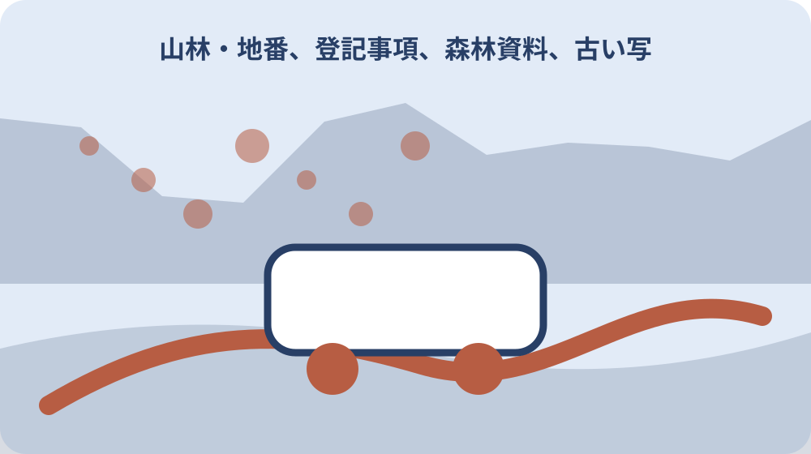
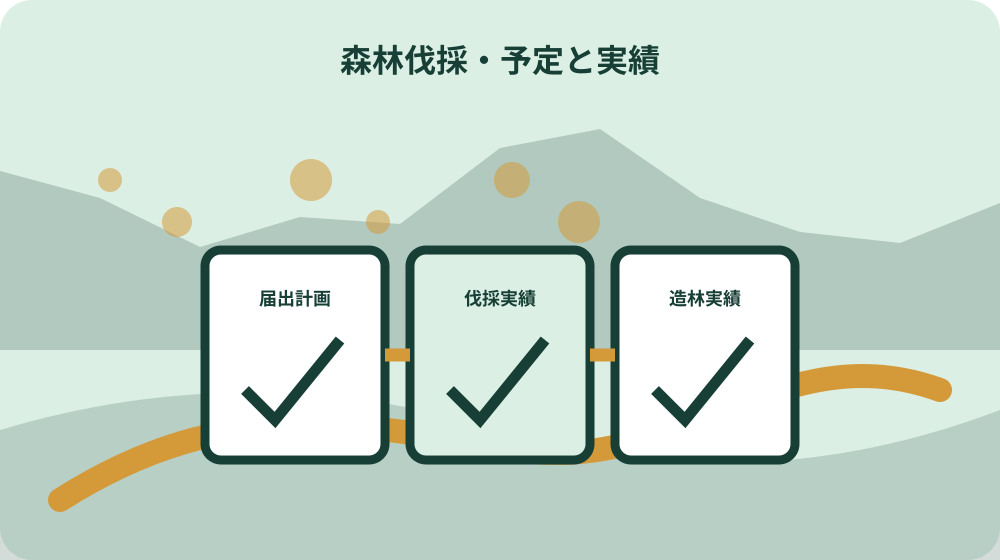

先に結論を確認する
この記事の答え：伐採届は伐採開始の90日前から30日前まで、伐採に係る森林の状況報告は伐採完了日から30日以内、伐採後の造林に係る森林の状況報告は造林完了日から30日以内です。三つを別起算で一件工程表に置き、地番、担当者、提出日、受付確認をそれぞれ記録します。
森町で最初に照合する条件：対象地番が地域森林計画対象森林か、保安林や別許可対象を含むかを森町林政係へ事前確認する。
結論は事前届と二つの報告を一件で閉じる
森町の山林で立木を伐採するときは、伐採前の届出だけを完了印にしません。一件工程表に対象地番、伐採目的、伐採開始予定日、伐採完了日、造林方法、造林完了日を置き、事前届と二つの状況報告を同じ案件番号で追います。
森町は伐採開始90日前から30日前までの届出、伐採終了後30日以内の伐採状況報告、造林完了後30日以内の造林状況報告を案内しています。三つの期限は起算日が異なるため、一つの『届出済み』欄へまとめません。
工程表には森林所有者、立木買受人、実際の伐採者、伐採後の造林者を別行で置きます。計画図、区域図、境界資料、搬出計画図、現場写真、提出控えも同じ地番へ結び、誰が次の報告をするかを伐採前に決めます。
この記事は森林取得届や一般的な手入れ相談の説明ではありません。木を切る一件について、計画と実績の差、二つの完了日、二種類の報告を家族と事業者が最後まで追える記録を作ることだけを扱います。
対象地番と地域森林計画対象を最初に確認する
森町は伐採届の対象を森林法に基づく地域森林計画対象森林とし、静岡県森林クラウド公開システムで位置を確認できると案内しています。住所や山の通称だけで探さず、登記事項の所在・地番と伐採予定区域を用意します。
森林クラウドの表示は対象確認の入口として保存し、閲覧日、表示レイヤー、地番との対応を書きます。地図上で対象に見える、または境界付近である場合は、画面の色だけで届出要否を確定せず、林政係へ位置図と地番を示します。
森町森林整備計画は2026年3月31日に変更され、2029年3月31日までの計画として本文と概要図等が公開されています。保存済みの古い計画だけを参照せず、相談日現在の計画と図面を公式ページから確認します。
一筆の一部だけを伐採する場合は、地番全体と伐採区域を別の線で描き、面積の根拠を記録します。隣接する複数筆、共有地、地番不明の山林は一括して推測せず、資料がそろった筆と確認待ちの筆を分けます。
森林クラウド、登記事項、固定資産資料、現地で使う山の呼び名は、それぞれ目的が異なります。クラウド上の林班等の表示を土地の地番や所有権境界と同じ番号だと決めず、地番一覧と図上番号の対照表を作ります。表示面積と登記面積、事業者が測った伐採面積に差がある場合はどれかを無記録で採用せず、資料名、基準日、計算方法を併記して林政係へ届出欄の記載方法を確認します。
保安林・転用・小規模伐採の分岐を相談する
森町は保安林に指定された森林について別途の許可や届出が必要と案内しています。地域森林計画対象であることを確認した後も、保安林、林地開発、他法令の手続が重ならないかを地番と計画内容で相談します。
伐採後に建物、土採取、太陽光発電設備、資材置場など森林以外へ利用する計画では、森町は規模に応じた伐採調書や土地利用計画図を挙げ、他法令の許認可が必要な可能性を注意しています。伐採届を転用許可の代用にしません。
森町は伐採方法等により伐採届が不要になる場合や別の届出が必要になる可能性があるため、伐採前の事前相談を求めています。少ない本数だから不要、危険な木だから同じ様式と決めず、地番、伐採区域、樹木の状況、伐採目的、実施者、予定日を林政係へ伝え、回答の前提を工程表に残します。
間伐、主伐、竹林、電線や道路沿いの支障木では関係者と必要資料が違い得ます。一件工程表の手続分岐欄へ、林政係の回答日、保安林確認先、道路管理者等への連絡、未確認の許認可を並べます。
所有者・立木買受人・伐採者・造林者を分ける
林野庁は届出対象者を森林所有者や立木買受人等とし、伐採者と伐採後の造林者が異なる場合は共同提出すると説明しています。土地所有者の名前だけを届出人欄へ写し、実施者との関係を省略しません。
役割表には土地所有者、立木所有者または買受人、伐採事業者、搬出担当、造林担当、書類提出担当を置きます。同じ人が複数役を担う場合も欄を消さず、各工程の連絡先と責任範囲を確認します。
静岡県は届出者確認書類、登記事項証明書等、届出者が土地所有者でない場合の伐採権原関係書類を添付資料に挙げています。契約書や承諾書のどの条項が対象地番と伐採権原を示すかを索引化します。
共有山林や相続中の土地では、一人の家族が現場を知っていることと伐採を決められる権限を同じにしません。権利関係は司法書士や弁護士等へ、届出の記載方法と必要承諾は林政係へ、目的を分けて確認します。
90日前から30日前の窓へ届出日を置く
森町と林野庁は伐採及び伐採後の造林届を、伐採開始の90日前から30日前までに提出すると案内しています。伐採予定日だけを書かず、90日前、提出予定日、30日前、現場開始日の四点を工程表へ置きます。
提出が早すぎても遅すぎても公式の期間から外れるため、契約前の概算日程と確定工程を分けます。天候や事業者都合で開始日が動く場合、どの変更で再提出や相談が必要かを自己判断せず林政係へ尋ねます。
森町が案内する事前提出物は届出書、伐採計画書、造林計画書です。伐採だけ先に具体化し、造林方法を空欄のまま現場へ進めず、天然更新を含む計画の書き方は現行様式と記載例で確認します。
提出控えには受付日、対象筆数、計画面積、予定期間、提出者、補正事項を記します。メールや郵送が可能か、受付確認をどう得るかは森町へ確認し、送信した日だけを受理日と断定しません。
伐採予定期間を幅で届けた後、長雨、作業道の崩れ、機械故障、境界確認待ちで現場を中断する場合があります。中断日、未伐採区域、再開見込みを日報へ残し、予定期間を越える、方法が変わる、別の筆へ作業を移す場合の相談時点を事前に決めます。天候で遅れたという説明だけで計画変更の確認を省かず、林政係へ旧計画と新しい工程を同時に示して、必要な書面と提出時期を回答台帳へ残します。

区域図・境界資料・搬出計画図を対応させる
静岡県は位置図・区域図、隣接森林との境界関係書類などを添付資料に挙げています。広域図は山林の場所、区域図は伐採範囲、境界資料は隣接地との関係を示すものとして分け、同じ線が全てを証明するように描きません。
森町は主伐の場合、伐採及び集材に係るチェックリストと搬出計画図を挙げています。伐採区域だけでなく集材路、土場、搬出路、沢や道路との位置を図へ示し、土地所有者の承諾範囲と重ねて確認します。
境界杭や公図、測量図、森林計画図は目的と精度が異なります。現地の古い印や尾根だけで所有界を確定せず、越境の疑いがあれば作業を広げる前に土地家屋調査士等へ相談し、確認済み区間と未確認区間を色分けします。
図面の全ページへ案件番号、対象地番、作成日、縮尺、方位、版番号を付けます。現場で紙図が汚損しても別案件の図に取り替えず、配布先と部数を管理し、差替え時は古い版を回収した記録を残します。
伐採計画と造林計画を現場担当へ渡す
伐採計画には方法、樹種、面積、期間等を現行様式に沿って記し、造林計画と対応させます。届出担当が作った数字を現場が知らない状態を避け、着手前会議で対象区域、残す木、境界、集材経路を指差し確認します。
伐採者と造林者が異なる案件では、伐採後の地表状態、残材、進入路、引渡日を決めます。造林担当が入る時点で路網が使えない、対象面積が違うという事態を防ぐため、現場引渡し票へ写真番号と未了作業を載せます。
天然更新を計画する場合も、木を切った後は自然に任せれば全て完了と決めません。更新方法、完了とする時期・状態、報告に必要な確認を森町の様式と林政係の説明で確かめ、家族の理解を別のメモへ残します。
事業者の作業計画と行政へ届けた計画に差があれば、現場の効率だけで変更しません。差分表へ地番、面積、方法、期間、搬出経路を書き、着手前に変更手続や再相談の要否を確認します。
伐採完了日から最初の30日を管理する
森町は伐採終了後30日以内に伐採に係る森林の状況報告書を提出すると案内しています。最初の30日は届出日や伐採開始日からではなく、実際の伐採完了日を起点にして工程表へ記します。
完了日の定義が、最後の立木を切った日、集材終了日、搬出完了日など関係者で違う場合は、林政係へ具体的な作業状況を伝えて確認します。都合のよい日を後から選ばず、現場日報と写真で前提を残します。
伐採状況報告には計画どおりの地番・区域・方法だったかを照合できる資料をまとめます。報告書の現行欄と必要添付は提出直前に確認し、写真は撮影日、方向、図上番号を付けて区域図へ結びます。
一部未完了、境界付近を保留、天候で別筆だけ延期した場合は、全体完了とみなして一枚で済ませません。筆ごとの進捗と保留理由を林政係へ示し、報告時期と変更の扱いについて回答を記録します。
写真は作業後の開けた景観を示すだけでなく、計画区域のどの端まで実施したかを読み取れる順序にします。着手前写真と同じ地点を可能な範囲で使い、残した木、沢沿い、隣接地、搬出路を図上番号で対応させます。ただし写真上の見通しだけで境界遵守を証明したと断定せず、境界確認資料、事業者の日報、区域図と組み合わせ、町が求める確認内容に沿って報告します。
造林完了日から二つ目の30日を管理する
造林を行う案件では、森町は造林完了日から30日以内に伐採後の造林に係る森林の状況報告書を提出すると案内しています。伐採報告を出した時点で案件を閉じず、造林予定と担当を継続表示します。
植栽、天然更新など計画した方法と実際の状態を照合し、造林完了日を記録します。植えた日だけで完了とするのか、複数日にまたがる場合をどう扱うかは、計画と現場状況を林政係へ示して確認します。
二つ目の報告にも対象地番、面積、計画書版、伐採報告の受付情報を結びます。家族が後から造林報告だけを見ても、どの伐採案件の続きか分かるよう、案件番号と関連提出日を表紙へ記します。
造林後の獣害、枯損、下刈りなど将来管理は、30日報告と同じではありません。報告完了欄の後に次回確認日、現地管理者、写真地点を置き、行政報告が済んだことを森林管理全体の終了としません。
複数樹種、複数筆、植栽日が分かれる場合は、最も早い日や最後の日を一括して完了日と選びません。筆別・区域別に作業日、方法、面積、実施者を並べ、報告書でどのようにまとめるかを林政係へ相談します。造林事業者の完了報告と行政へ提出する状況報告も同じ書類とは限らないため、受領した写真・数量表を根拠資料として索引化し、町の現行様式へ転記した人と確認した人を分けます。

計画変更と現場写真を版ごとに保存する
伐採区域、面積、方法、期間、造林方法、担当者が変わったら、届出済み計画を無記録で上書きしません。変更前後の値、理由、判明日、林政係への質問、回答、差し替えた図面を変更台帳へ残します。
現場写真は着手前、境界確認時、伐採中、伐採完了、造林前、造林完了の地点をそろえます。美しい山の記録ではなく計画区域と作業実績を照合する資料なので、撮影方向、地番、図上番号、撮影者を付けます。
ドローン撮影を行う場合は飛行ルール、土地や周辺への配慮を別に確認し、撮影できないことを報告不能と考えません。地上写真、事業者日報、位置図など、森町が求める報告資料を先に確認します。
クラウド共有では元写真の撮影情報を保持し、加工版は別ファイルにします。境界線を後から写真へ描く場合は『説明用概略線』と表示し、測量済みの所有界や届出区域の正式図面と誤解されないようにします。
大石の視点：木を切った日で案件を閉じない
ここまでの対象森林、提出期間、添付資料、二つの状況報告は森町、静岡県、林野庁の公的資料に基づく事実です。ここからは私、大石浩之の不動産・所有記録上の提案であり、町が指定する様式ではありません。
私は山林の伐採ファイルに『伐採済み』という一語だけを書きません。事前届受付、実際の伐採完了、伐採状況報告、造林完了、造林状況報告を五つの印に分けます。木がなくなった現地だけでは、後続報告の有無を判断できないからです。
伐採事業者へ書類を任せる場合も、所有者側で控えと期限を持ちます。契約上誰が提出するかを明記し、提出控えを受け取る日を置きます。これは事業者を疑うためではなく、所有者交代や担当退職後も案件を再現するためです。
売却や相続では、伐採前の林相より、計画どおり伐採・造林し報告したかが次の管理者に重要です。私は価格評価と行政報告を混ぜず、まず公的記録と現場実績の差を閉じてから、将来利用や維持費を検討します。
届出控え・二報告・次回管理を家族へ渡す
引継ぎ一式は対象地番一覧、地域森林計画対象の確認、保安林等の分岐回答、権原資料、事前届と計画書、区域図・搬出図、伐採報告、造林報告、写真索引、変更台帳の順にします。
表紙には三つの法定時期に対応する実日付を置きます。伐採開始日、伐採完了日、造林完了日を混同せず、それぞれに提出日、受付確認、補正の有無を結び、未提出なら担当と期限を赤字だけに頼らず文章で示します。
今日できる一歩は、伐採を考えている山林の所在・地番を一つ確定し、位置図と伐採目的を用意することです。森町林政係へ地域森林計画対象、保安林等の別手続、必要な最新様式を尋ね、回答日を工程表へ書きます。
案件完了後も、次回の下刈り、獣害確認、境界・搬出路の点検日を引継ぎます。ただし将来管理のメモを提出済み報告書へ書き足さず、行政提出版は当時の記録、管理版は現在の予定として相互参照番号で結びます。
電子フォルダは事前届、伐採実績、造林実績、行政回答、契約・権原、写真の六区分にし、同じ写真を別名で複製し続けません。提出したファイルには提出日と内容の指紋値等を残す方法もありますが、これは私の管理提案であり森町の必須要件ではありません。家族が専用ソフトなしで読める索引PDFや一覧表も添え、外部保存先の契約終了や担当者の端末故障で控えを失わないよう、保管場所と復元確認日を決めます。年に一度はリンク切れと読取可否を確認し、確認日だけを索引へ追記します。復元できた端末名も記録します。